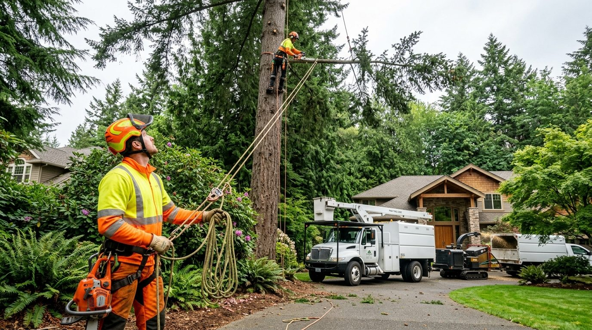
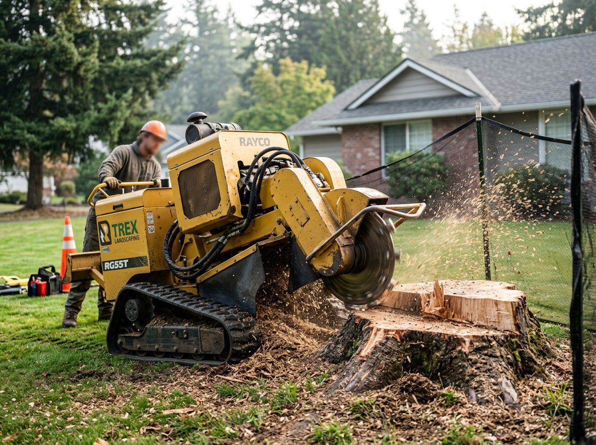
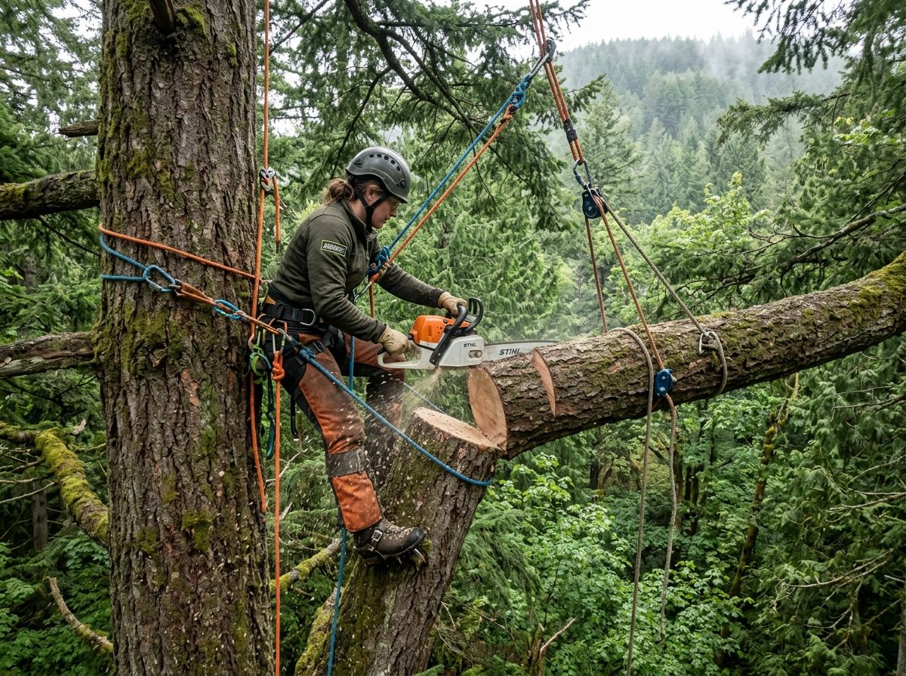

Olympia, WA Tree Care
Tree Removal in Olympia, WA
Rapid response for hazardous trees, storm damage, and tight-quarter crane removals.
Get an Exact Quote for Your Project
Speak with our local specialists for honest pricing, clear timelines, and vetted local crews.
- Hazard & Canopy Assessment: Structural lean, root rot, and proximity to buildings evaluated.
- Precision Rigging & Cranes: Safe sectional dismantling in confined residential spaces.
- Complete Cleanup: Brush chipping, log bucking, and deep stump grinding available.
Prefer to speak with an estimator? Call (360) 822-3284.
Request a Free Quote
Fast pricing with zero pressure.
Safe, Efficient Tree Removal for Olympia Properties
When a damaged or diseased tree threatens your roof, driveway, or power lines, you need experienced arborists who understand local terrain and municipal rules. We deliver safe, controlled drops in tight residential quarters across Olympia.
Olympia Local Tree Removal Network
We match your job to local crews equipped with bucket trucks, compact spider lifts, and heavy-duty chippers, at whatever scale the tree calls for.
About us
Services
Explore our core tree care and hazard mitigation solutions in Olympia.
Tree Removal
Safe directional felling and crane removal for dead, dying, or dangerous trees.
Tree Removal in Olympia →Emergency Storm Damage
24/7 urgent response for fallen limbs, snapped trunks, and windthrow hazards.
Emergency Storm Damage in Olympia →Stump Grinding
Deep root flare grinding to reclaim lawn space and prevent pest nesting.
Stump Grinding in Olympia →Hazardous Tree Trimming
Crown thinning, deadwooding, and clearance pruning away from power lines.
Hazardous Tree Trimming in Olympia →Trusted Tree Removal & Hazard Mitigation in Olympia
Olympia maritime rainfall and winter gale storms place immense stress on mature Douglas firs, Western hemlocks, and bigleaf maples. In historic neighborhoods like South Capitol and wooded hillsides off Cooper Point Road, root saturation and saturated glacial soils create severe windthrow hazards. The crews we work with handle technical rigging, crane-assisted drops near power lines, and permitting under the City of Olympia tree protection rules.
- Expert knowledge of City of Olympia Urban Forestry permits and landmark tree protections.
- Zero-impact low-ground-pressure turf equipment to protect wet South Sound lawns.
- 24/7 priority emergency dispatch following Puget Sound winter windstorms.

Why Choose Olympia Tree Removal Pros?
Local Canopy Experience
We match jobs to crews who know South Sound soil saturation and root rot in mature firs.
Fully Insured Crews
We refer only to companies carrying current liability insurance. Ask any crew for their certificate and L&I registration number before work starts.
Complete Debris Cleanup
Chipping, log hauling, and raking are standard scope — confirm they are itemized in your written estimate.
Questions We Hear
Do I need a permit to remove a tree in Olympia?
Within Olympia city limits, permits are typically required for removing trees over certain diameter thresholds, especially in critical areas or landmark stands. Pruning hazardous branches threatening structures can often proceed under emergency safety exemptions.
How quickly can a hazardous tree be removed after a storm?
Emergency crews are dispatched on a triage basis within hours for trees leaning against homes, resting on utility drops, or blocking access roads.
Do you handle stump grinding after felling?
Yes. The crews we refer grind stumps roughly 6 to 12 inches below grade and turn the root flare into mulch you can backfill with.
Talk with a local specialist
Speak with an arborist today.
Free, no-obligation estimate.
Our 4-Stage Tree Removal & Safety Rigging Process
Certified arbor methods engineered to protect structures, underground utilities, and surrounding landscapes.
1. Canopy Hazard & Rigging Survey
We assess structural lean, interior heartwood decay, proximity to power lines, and ground drop zones before ascending.
2. Sectional Climbing & Crane Lowering
Top branches and heavy trunk logs are dismantled section-by-section using friction brakes, pulleys, or crane hoists.
3. High-Capacity Chipping & Log Hauling
Brush and branches are fed through industrial chippers on-site; timber is bucked and hauled away cleanly.
4. Deep Stump Grinding & Rake Out
Stumps are ground 8-12 inches beneath turf level. We backfill mulch and rake the site completely spotless.